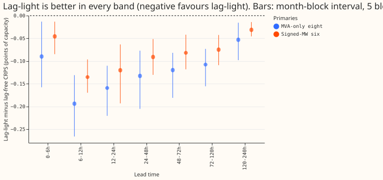
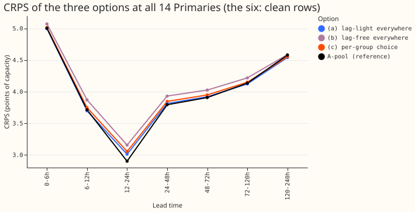

Does one demand network for all 14 Primaries lose accuracy against using the lag-light network at the eight and the lag-free network at the six?
One lag-light network for all 14 Primaries beats the per-group choice, because the lag-free recipe is 0.081 points of CRPS worse than the lag-light network at the six. We asked whether the lag-free recipe is good enough at the six signed-MW Primaries to use there, with the lag-light network (which reads yesterday's and last week's power) only at the eight MVA-only Primaries. We re-scored the stored forecasts of two earlier experiments and ran no fit. The pre-registered test failed at the six: the mean difference between the two networks exceeds 0.03 in every lead band (by 0.001 at 120-240 h). Nothing is adopted. Verdict: not supported. All numbers are CRPS in points of capacity (lower is better), over five test months, interim and unaudited.
Terms. CRPS is the continuous ranked probability score. The eight are the Primary substations metered in MVA only, and the six are the Primaries metered in signed MW; D15 and D18 are two further Primaries scored report-only. L-1d is the daily-refit demand network without power readings (experiment 511). "Folds" are the five test months. A Bonferroni interval is widened for the number of counted tests. Lag-light is arm RDWT-D15 of experiment 553: day-ago and week-ago power readings, trailing temperature windows, and 15% lag dropout, with the readings present. Lag-free is arm E of experiment 548. A-pool is the network that reads all recent power (experiment 425). The three options are (a) lag-light at all 14, (b) lag-free at all 14, and (c) lag-light at the eight and lag-free at the six. Option (c) is a row selection of the two stored arms, so it equals (a) at the eight and (b) at the six.
Results


- Pre-registered test. (a) within 0.03 of (c) at the six: failed. The difference is -0.081 over 24-120 h and -0.059 over all leads, and larger than 0.03 in every band (smallest -0.031 at 120-240 h). At the eight the test holds by construction, since (a) and (c) are the same network. The failure runs the other way from the cost the test guards against: (a) is better than (c), so the per-group choice gives up accuracy, and one network for all 14 does not.
- Predictions. P1 (six, 24-120 h, lag-light minus lag-free between -0.10 and 0.00): held, -0.081. P2 (lag-free at the eight trails by 0.10 to 0.14): held, 0.117. P3 (Christmas week at the eight, lag-light no worse than lag-free by more than 0.10): held, -0.064 (3.902 against 3.965 over 24-120 h; one week, no interval). P4 (leak above lag-free, under 6.0): held as stored, 5.33 against 4.55.
Table 1. Lag-light minus lag-free, 24-120 h (report-only; the 14 counted contrasts are the 7 bands at each of the eight and the six) (95% month-block bootstrap, 5 blocks, near min-to-max; Bonferroni count 14; MDE = minimum detectable effect, from the two seeds of L-1d).
| Primaries | CRPS lag-light | CRPS lag-free | Difference | Interval | MDE | Folds worse |
|---|---|---|---|---|---|---|
| Eight | 4.438 | 4.555 | -0.117 | -0.174 to -0.078 | 0.116 | 0 of 5 |
| Six | 3.209 | 3.290 | -0.081 | -0.119 to -0.044 | 0.155 | 0 of 5 |
| All 14 (a) against (c) | 3.993 | 4.022 | -0.029 | -0.043 to -0.017 | 0.126 | 0 of 5 |
Both 24-120 h intervals exclude zero after the Bonferroni widening for 14 tests (upper ends -0.065 and -0.032). Of the 14 counted per-band contrasts, the two at 0-6 h include zero after widening; the other 12 exclude it. The difference at the six is under its MDE, and the eight's difference (-0.117) equals its MDE (0.116), so neither is confirmed by the seed noise alone, but the sign agrees in all five folds.
- Per band. Lag-light minus lag-free at the eight, from 0-6 h to 120-240 h: -0.090, -0.194, -0.159, -0.133, -0.120, -0.108, -0.053. At the six: -0.046, -0.135, -0.120, -0.091, -0.082, -0.075, -0.031. The gain is largest at 6-12 h and shrinks with lead time.
- Against A-pool, 24-120 h. At the eight, lag-light is +0.043 (0.011 to 0.082) and lag-free is +0.160 (0.100 to 0.223). At the six, lag-light is -0.071 (-0.109 to -0.015) and lag-free is +0.010 (-0.046 to +0.079). The lag-free recipe is not shown to differ from A-pool at the six; the lag-light network is better than A-pool there.
Table 2. Absolute CRPS, 24-120 h.
| Set | (a) lag-light | (b) lag-free | (c) per group | A-pool | L-1d | manual_heuristic |
|---|---|---|---|---|---|---|
| Eight | 4.438 | 4.555 | 4.438 | 4.395 | 4.631 | 5.521 |
| Six | 3.209 | 3.290 | 3.290 | 3.280 | 3.342 | 4.686 |
| All 14 | 3.993 | 4.097 | 4.022 | 3.992 | 4.164 | 5.218 |
| D15 and D18 (report only) | 9.924 | 10.37 | n/a | 10.21 | 10.50 | 13.58 |
Table 3. Slices, lag-light minus lag-free (24-120 h unless noted; "all leads" in brackets).
| Slice | Eight | Six |
|---|---|---|
| Cold winter nights | -0.162 (-0.092) | -0.049 (+0.050; interval -0.003 to +0.090) |
| Rows with no labelled event | -0.105 (-0.076) | -0.081 (-0.059) |
| Christmas week | -0.064 (-0.015) | -0.018 (-0.014) |
| Bank-holiday windows | -0.100 (-0.060) | -0.141 (-0.084) |
The six has no rows outside the clean class, so its "no labelled event" row equals its all-rows row. Intervals for the one-week and bank-holiday slices rest on 1 to 5 blocks and are not reliable. The cold-night slice at the six over all leads is the one cell where the mean difference favours lag-free better (2 of 3 folds; this slice has 3 test months), and its interval includes zero.
- D15 and D18 (report only). Lag-light is 0.441 better over 24-120 h (interval -0.702 to -0.128) but 0.604 worse in Christmas week; the minimum detectable effect at these two series is 1.4, so neither figure is resolved.
- Tails, 24-120 h. Pinball loss at q95: -0.051 (-0.071 to -0.032) at the eight and -0.022 (-0.034 to -0.007) at the six, in favour of lag-light. At q99: -0.017 and -0.003.
- Injected-shift leak (stored, experiment 553, all 14 Primaries pooled): lag-light 5.33 points of capacity, lag-free 4.55, L-1d 4.49. The leak is not split by group, so it does not separate the eight from the six.
- Operational cost of each option. (a) One recipe to maintain, and the day-ago and week-ago power readings are required at all 14 Primaries (with 15% dropout, the network still runs when they are absent, at the lag-free score). (b) One recipe, no readings required, 0.104 CRPS worse over 24-120 h at the 14. (c) Two recipes to maintain, readings required only at the eight, 0.029 CRPS worse than (a) over 24-120 h at the 14.
Checks
- Origin-time weather is the standing rule; this experiment reads only stored per-row scores of experiments 548 and 553, which assert it row by row (experiment 553: 1,142,520 test rows over 153 test origins, for example origin 2025-10-01 09:00 UTC, weather run 2025-10-01 00:00 UTC). No forecast is made here, so there is no new row to assert.
- Rows. 1,145,256 stored rows; 1,142,520 have a finite CRPS for every arm used and form the row sets (the same count as experiment 553). July 2026 is not scored.
- Counted contrasts: 14, matching the Bonferroni count.
- Reviews. One Sonnet code review before scoring. It found that the first draft omitted experiment 553's finiteness mask, which would have let the absolute means of different arms average over different rows. That mask is now applied. It also found that the first assertions were tautological; they are now null checks on the per-group column. Its other findings are recorded below in the caveats. Write-up review: see the pull request.
- Cost: CPU only, 2 cores, a few minutes. No GPU.
Caveats
- Seeds. Both arms are pools of seeds 0 and 1, as every stored comparator is. The difference at the six (0.081) is under its MDE (0.155), so it needs the multi-seed bake-off to confirm.
- The six is the clean class. The six's row set is rows with no labelled event, as in experiments 521 and 553, so the 14 here are the eight plus the clean rows of the six. NGED's load-shift logs may miss events, so these rows may hold unlabelled events.
- No forecast plots. The experiment makes no new forecast, so it has no day-ahead or 10-day example of its own. The forecasts of arm RDWT-D15 are plotted in experiment 553; the stored predictions of arm E are not drawn here.
- Lead range. The lead range is 0 to 240 h, which covers the 1 to 10 day horizon NGED care about.
- Bootstrap draws differ in order from experiment 553's, so intervals for the same contrast may differ from experiment 553's in the third decimal place.
What to try next
- Take the lag-light network forward as the single candidate for all 14 Primaries in the planned multi-seed bake-off, and keep the lag-free recipe as the fallback for missing readings.
- Look at the six on cold winter nights, the one slice whose mean difference favoured lag-free, in that bake-off.